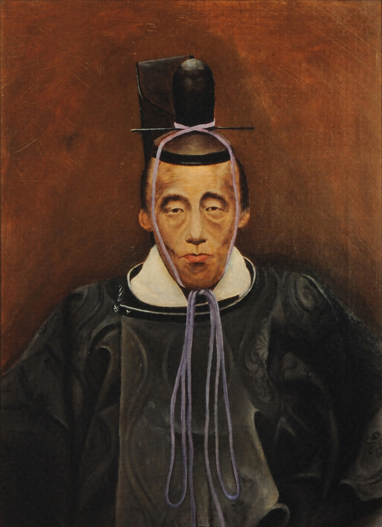
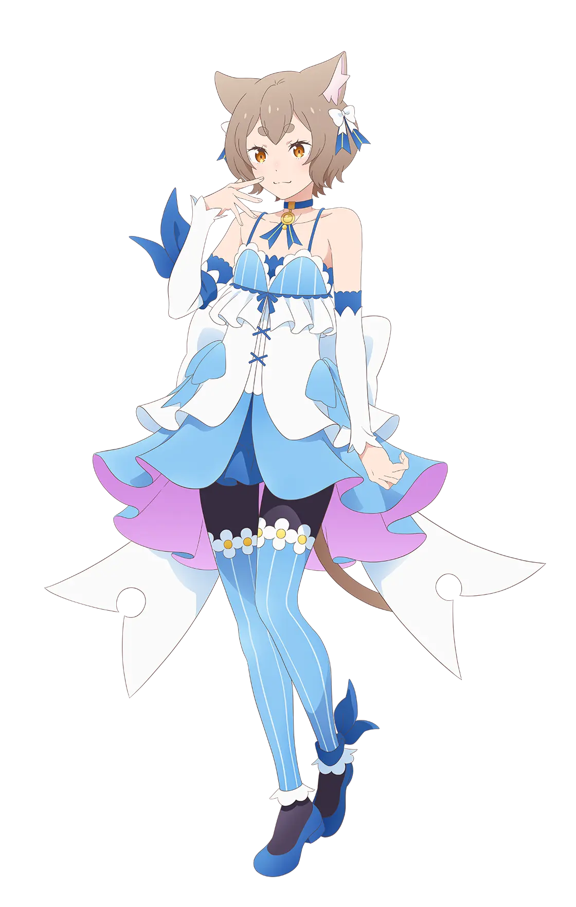

プロフィール
名前：峰松 功普（なんて読むでしょう？）
やってた部活：中学[剣道] 高校[弓道](我ながら武士みたいだと思ってる)
誕生日：２００６年１月１６日
同じ誕生日の有名人
鍋島直正 (すげぇだろ)

引用元：https://bunka.nii.ac.jp/heritages/detail/221160
フェリックス・アーガイル (かわいいよな)

引用元：https://re-zero-anime.jp/tv/character/
好きな食べ物：肉系、刺身・寿司、チョコレート
嫌いな食べ物：エビ、焼き魚全般（鮭とサンマはいける）